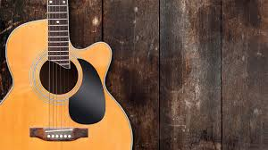
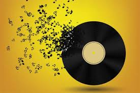

Country music originated in the 1920s. Popular artists today include Tim McGraw, Carrie Underwood, and Blake Shelton.
Country

Jazz

The "Jazz Age" occured during the 1920s. Popular artists include Miles Davis, Duke Coltrane, and Louis Armstrong.
Rock
Rock Music originated in the 1950s in the United States. Popular artists include AC/DC, Billy Joel, and Keith Richards.
Pop
The term pop music was used interchangably with rock music until the 1960. This branch of music is comprised of the top singles from multiple artists.